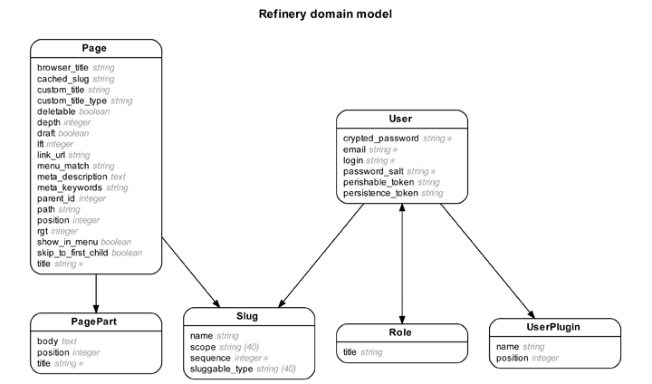
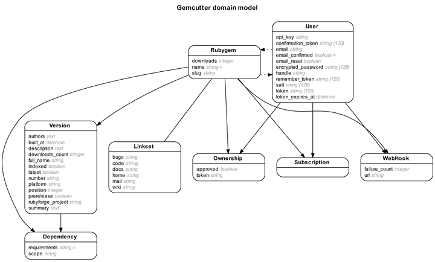

Here are some examples of actual applications and the entity-relationship diagrams of their models. Want to try for yourself? See the installation instructions.
Refinery is a content management system for medium-sized websites. The model diagram generated by Rails ERD is particularly clean and convenient.

The Rubygems website is powered by Gemcutter.
